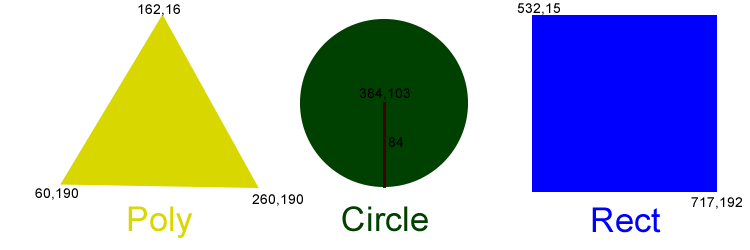

The following image has clickable areas mapped into it.
The code for this image and it's map is:
<img src="clickmapDemo.png" width="750" height="250" usemap="#demoMap" alt="demo click map" />
<map name="demoMap">
<area shape="poly" coords="162,16, 260,190, 60,190" alt="polygon" href="#poly" />
<area shape="circle" coords="384,103,84" alt="circle" href="#circle" />
<area shape="rect" coords="532,15,717,192" alt="rectangle" href="#rectangle" />
</map>
The map tag specifies the name of the map and within it’s content is a series of area tags. Each area tag describes the shape of a clickable area. There are four possible tags: default selects the whole image, poly describes a polygon, circle describes a circle and rect describes a rectangle. As each of these have their own way of describing the shape. Click on a shape in the image above to see its explanation.
<area shape="poly" coords="162,16, 260,190, 60,190" alt="polygon" href="#poly" />
Polygons are simply a series of points. Each pair of points is connected by a line to form a shape. The coordinates are specified using an x,y format where the x coordinate is the distance in pixels from the left edge of the image and the y coordinate is the distance in pixels from the top edge of the image. You can specify the points in either clockwise or counter-clockwise order but should try to stay consistent. If the final point specified is not the starting point, then the browser will automatically add that point so it is common not to see the final point specified as it is always the same as the starting point. While you do not need to have spaces between the points, it makes reading the map much easier.
<area shape="circle" coords="384,103,84" alt="circle" href="#circle" />
The circle shape is more traditional. You specify the center point of the circle as the coordinates, then have a third number which represents the radius of the circle. The x,y coordinates are expressed as distance from the left and top just like the polygon